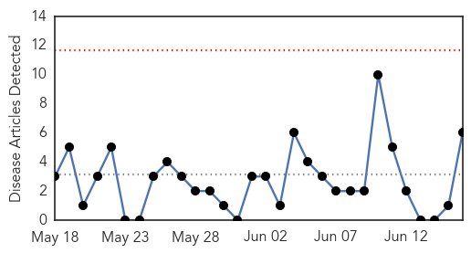

30 Day Trends
Web: 0 alerts, 0 warnings
Twitter: 0 alerts, 0 warnings
Top Articles:
- 0.967
- Experts: Risk of hepatitis E outbreak 'very high' in earthquake-ravaged Nepal
- 0.956
- Risk of Hepatitis E Outbreak in Earthquake-Ravaged Nepal is Significant, Experts Say
- 0.895
- HEV risk prevalent in Nepal; experts call for protective measures
- 0.600
- Hepatitis responsible for 93% of prison disease
- 0.553
- State prisoners sue for access to hepatitis C drugs
- 0.514
- Theranos Preventative Lab Testing Allows Patients to Take Their Health In Their Own Hands
Top Tweets:
-
No tweets found for Jun 16, 2015
Web/News Articles
Tweets